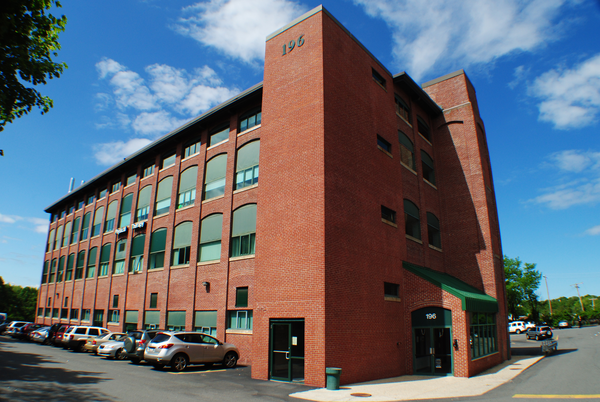

VALT - Directions
VALT is located at Tufts University's 196 Boston Avenue location on the 4th floor.
Parking is available around the building and in the parking structure for 200 Boston Ave. This is in an office building complex, near Route 16, about a mile northwest of Halligan Hall along Boston Avenue. The parking lot serves 196 and 200, so after you arrive you have to search to find 196, it's the smaller of the two buildings, set back a bit, and it's the one that sits closer to route 16. Parking is free and usually plentiful.
By T, go to Davis Square and take the 94 bus right to the lab, or the 96 bus most of the way there (get off at Winthrop St), or you can walk up from Davis Square, or get a taxi at Davis Square. The 80 bus also comes to the lab.
